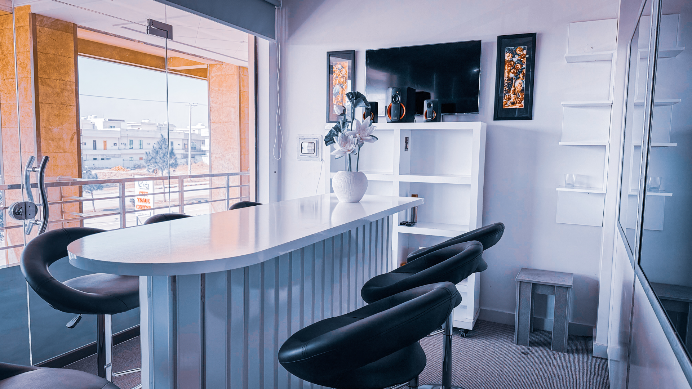

In today's digital landscape, optimizing your Drupal website for search engines is essential
to achieve visibility and long-term success. As a trusted drupal seo company, At Drupak, we
provide expert SEO services tailored for Drupal, helping identify gaps and opportunities
that can boost rankings.
Our solutions focus on keyword optimization, content refinement, and technical SEO
enhancements—ensuring your website performs seamlessly and attracts the right audience.


Our dedicated team of experts works closely with you to craft a comprehensive SEO strategy that
aligns with your business goals. By focusing on organic traffic growth and improved search
engine
rankings, we ensure long-term value for your Drupal website.
With an emphasis on sustainable
results, our drupal seo services are designed to strengthen your online presence and unlock the
full
potential of your digital platform.
Comprehensive SEO solutions tailored for your Drupal website's success
Talk to a Drupal SEO ExpertOn page seo services
Technical seo services
Seo link building services
Organic seo services
Seo copywriting services
Local seo services
Seo audit services
International seo services
Keyword research
Competitive analysis
Explore our full range of Drupal development and digital services